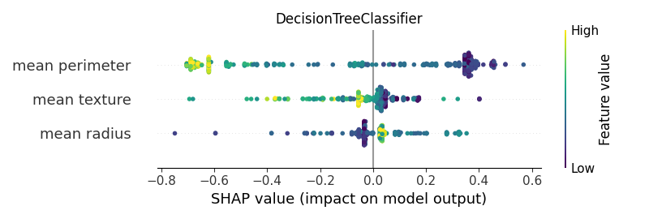
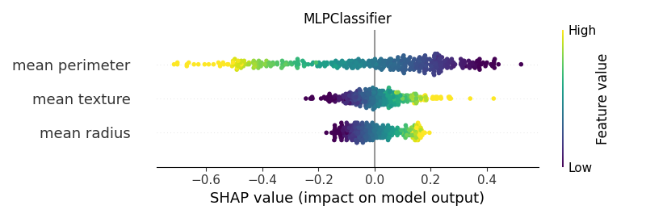

Note
Click here to download the full example code
Shap - Main 02¶


- 


- 


Out:
/Users/cbit/Desktop/repositories/environments/venv-py39-oss1017/lib/python3.9/site-packages/xgboost/sklearn.py:1224: UserWarning:
The use of label encoder in XGBClassifier is deprecated and will be removed in a future release. To remove this warning, do the following: 1) Pass option use_label_encoder=False when constructing XGBClassifier object; and 2) Encode your labels (y) as integers starting with 0, i.e. 0, 1, 2, ..., [num_class - 1].
[21:21:48] WARNING: /Users/runner/work/xgboost/xgboost/src/learner.cc:1115: Starting in XGBoost 1.3.0, the default evaluation metric used with the objective 'binary:logistic' was changed from 'error' to 'logloss'. Explicitly set eval_metric if you'd like to restore the old behavior.
/Users/cbit/Desktop/repositories/environments/venv-py39-oss1017/lib/python3.9/site-packages/sklearn/neural_network/_multilayer_perceptron.py:614: ConvergenceWarning:
Stochastic Optimizer: Maximum iterations (200) reached and the optimization hasn't converged yet.
<IPython.core.display.HTML object>
--------------------------------------------------------------------------------
Classifier: GaussianNB()
Kernel type: <class 'shap.explainers._kernel.Kernel'>
0%| | 0/375 [00:00<?, ?it/s]
2%|2 | 8/375 [00:00<00:05, 72.72it/s]
5%|4 | 17/375 [00:00<00:04, 79.31it/s]
7%|6 | 26/375 [00:00<00:04, 80.06it/s]
9%|9 | 35/375 [00:00<00:04, 78.76it/s]
11%|#1 | 43/375 [00:00<00:04, 78.98it/s]
14%|#3 | 52/375 [00:00<00:04, 79.93it/s]
16%|#6 | 60/375 [00:00<00:04, 78.52it/s]
18%|#8 | 68/375 [00:00<00:04, 75.73it/s]
21%|## | 77/375 [00:00<00:03, 78.23it/s]
23%|##2 | 86/375 [00:01<00:03, 80.03it/s]
25%|##5 | 95/375 [00:01<00:03, 81.01it/s]
28%|##7 | 104/375 [00:01<00:03, 81.86it/s]
30%|### | 113/375 [00:01<00:03, 81.73it/s]
33%|###2 | 122/375 [00:01<00:03, 81.77it/s]
35%|###4 | 131/375 [00:01<00:02, 82.54it/s]
37%|###7 | 140/375 [00:01<00:02, 82.59it/s]
40%|###9 | 149/375 [00:01<00:02, 82.55it/s]
42%|####2 | 158/375 [00:01<00:02, 82.28it/s]
45%|####4 | 167/375 [00:02<00:02, 83.20it/s]
47%|####6 | 176/375 [00:02<00:02, 83.11it/s]
49%|####9 | 185/375 [00:02<00:02, 82.32it/s]
52%|#####1 | 194/375 [00:02<00:02, 82.55it/s]
54%|#####4 | 203/375 [00:02<00:02, 82.49it/s]
57%|#####6 | 212/375 [00:02<00:01, 82.63it/s]
59%|#####8 | 221/375 [00:02<00:01, 82.74it/s]
61%|######1 | 230/375 [00:02<00:01, 82.87it/s]
64%|######3 | 239/375 [00:02<00:01, 82.56it/s]
66%|######6 | 248/375 [00:03<00:01, 82.82it/s]
69%|######8 | 257/375 [00:03<00:01, 82.89it/s]
71%|####### | 266/375 [00:03<00:01, 82.29it/s]
73%|#######3 | 275/375 [00:03<00:01, 80.92it/s]
76%|#######5 | 284/375 [00:03<00:01, 81.08it/s]
78%|#######8 | 293/375 [00:03<00:01, 80.94it/s]
81%|######## | 302/375 [00:03<00:00, 81.26it/s]
83%|########2 | 311/375 [00:03<00:00, 81.00it/s]
85%|########5 | 320/375 [00:03<00:00, 81.51it/s]
88%|########7 | 329/375 [00:04<00:00, 81.58it/s]
90%|######### | 338/375 [00:04<00:00, 81.97it/s]
93%|#########2| 347/375 [00:04<00:00, 82.64it/s]
95%|#########4| 356/375 [00:04<00:00, 81.91it/s]
97%|#########7| 365/375 [00:04<00:00, 82.44it/s]
100%|#########9| 374/375 [00:04<00:00, 82.61it/s]
100%|##########| 375/375 [00:04<00:00, 81.50it/s]
[[-0.2143723 -0.19038141 -0.22085071]
[ 0.15549902 0.04950881 0.16806476]
[-0.31382936 0.06041049 -0.31223003]
...
[-0.10057844 0.0701043 -0.13986502]
[ 0.14968807 0.0257892 0.15703457]
[-0.19725508 0.15063206 -0.2459545 ]]
base value: 0.6256054145239283
0%| | 0/375 [00:00<?, ?it/s]
2%|2 | 9/375 [00:00<00:04, 83.59it/s]
5%|4 | 18/375 [00:00<00:04, 83.52it/s]
7%|7 | 27/375 [00:00<00:04, 82.92it/s]
10%|9 | 36/375 [00:00<00:04, 80.55it/s]
12%|#2 | 45/375 [00:00<00:04, 80.88it/s]
14%|#4 | 54/375 [00:00<00:03, 81.32it/s]
17%|#6 | 63/375 [00:00<00:03, 81.27it/s]
19%|#9 | 72/375 [00:00<00:03, 81.59it/s]
22%|##1 | 81/375 [00:00<00:03, 82.41it/s]
24%|##4 | 90/375 [00:01<00:03, 82.40it/s]
26%|##6 | 99/375 [00:01<00:03, 82.70it/s]
29%|##8 | 108/375 [00:01<00:03, 82.43it/s]
31%|###1 | 117/375 [00:01<00:03, 81.56it/s]
34%|###3 | 126/375 [00:01<00:03, 81.23it/s]
36%|###6 | 135/375 [00:01<00:02, 80.75it/s]
38%|###8 | 144/375 [00:01<00:02, 81.11it/s]
41%|#### | 153/375 [00:01<00:02, 81.60it/s]
43%|####3 | 162/375 [00:01<00:02, 81.90it/s]
46%|####5 | 171/375 [00:02<00:02, 82.28it/s]
48%|####8 | 180/375 [00:02<00:02, 82.55it/s]
50%|##### | 189/375 [00:02<00:02, 82.66it/s]
53%|#####2 | 198/375 [00:02<00:02, 83.17it/s]
55%|#####5 | 207/375 [00:02<00:02, 82.79it/s]
58%|#####7 | 216/375 [00:02<00:01, 82.72it/s]
60%|###### | 225/375 [00:02<00:01, 82.22it/s]
62%|######2 | 234/375 [00:02<00:01, 82.46it/s]
65%|######4 | 243/375 [00:02<00:01, 82.30it/s]
67%|######7 | 252/375 [00:03<00:01, 81.98it/s]
70%|######9 | 261/375 [00:03<00:01, 83.00it/s]
72%|#######2 | 270/375 [00:03<00:01, 83.18it/s]
74%|#######4 | 279/375 [00:03<00:01, 83.23it/s]
77%|#######6 | 288/375 [00:03<00:01, 82.92it/s]
79%|#######9 | 297/375 [00:03<00:00, 82.29it/s]
82%|########1 | 306/375 [00:03<00:00, 82.91it/s]
84%|########4 | 315/375 [00:03<00:00, 82.80it/s]
86%|########6 | 324/375 [00:03<00:00, 82.09it/s]
89%|########8 | 333/375 [00:04<00:00, 82.46it/s]
91%|#########1| 342/375 [00:04<00:00, 82.36it/s]
94%|#########3| 351/375 [00:04<00:00, 82.30it/s]
96%|#########6| 360/375 [00:04<00:00, 82.89it/s]
98%|#########8| 369/375 [00:04<00:00, 82.68it/s]
100%|##########| 375/375 [00:04<00:00, 82.28it/s]
--------------------------------------------------------------------------------
Classifier: LogisticRegression()
Kernel type: <class 'shap.explainers._kernel.Kernel'>
0%| | 0/375 [00:00<?, ?it/s]
2%|2 | 9/375 [00:00<00:04, 83.06it/s]
5%|4 | 18/375 [00:00<00:04, 84.44it/s]
7%|7 | 27/375 [00:00<00:04, 84.36it/s]
10%|9 | 36/375 [00:00<00:04, 84.52it/s]
12%|#2 | 45/375 [00:00<00:03, 84.68it/s]
14%|#4 | 54/375 [00:00<00:03, 84.26it/s]
17%|#6 | 63/375 [00:00<00:03, 83.86it/s]
19%|#9 | 72/375 [00:00<00:03, 83.65it/s]
22%|##1 | 81/375 [00:00<00:03, 83.85it/s]
24%|##4 | 90/375 [00:01<00:03, 83.47it/s]
26%|##6 | 99/375 [00:01<00:03, 84.32it/s]
29%|##8 | 108/375 [00:01<00:03, 84.18it/s]
31%|###1 | 117/375 [00:01<00:03, 84.11it/s]
34%|###3 | 126/375 [00:01<00:02, 83.88it/s]
36%|###6 | 135/375 [00:01<00:02, 84.11it/s]
38%|###8 | 144/375 [00:01<00:02, 84.18it/s]
41%|#### | 153/375 [00:01<00:02, 84.24it/s]
43%|####3 | 162/375 [00:01<00:02, 84.30it/s]
46%|####5 | 171/375 [00:02<00:02, 84.54it/s]
48%|####8 | 180/375 [00:02<00:02, 84.15it/s]
50%|##### | 189/375 [00:02<00:02, 85.26it/s]
53%|#####2 | 198/375 [00:02<00:02, 85.03it/s]
55%|#####5 | 207/375 [00:02<00:01, 84.95it/s]
58%|#####7 | 216/375 [00:02<00:01, 85.05it/s]
60%|###### | 225/375 [00:02<00:01, 84.89it/s]
62%|######2 | 234/375 [00:02<00:01, 85.23it/s]
65%|######4 | 243/375 [00:02<00:01, 85.35it/s]
67%|######7 | 252/375 [00:02<00:01, 85.63it/s]
70%|######9 | 261/375 [00:03<00:01, 85.34it/s]
72%|#######2 | 270/375 [00:03<00:01, 84.17it/s]
74%|#######4 | 279/375 [00:03<00:01, 84.17it/s]
77%|#######6 | 288/375 [00:03<00:01, 83.74it/s]
79%|#######9 | 297/375 [00:03<00:00, 84.03it/s]
82%|########1 | 306/375 [00:03<00:00, 84.07it/s]
84%|########4 | 315/375 [00:03<00:00, 84.02it/s]
86%|########6 | 324/375 [00:03<00:00, 84.28it/s]
89%|########8 | 333/375 [00:03<00:00, 84.18it/s]
91%|#########1| 342/375 [00:04<00:00, 83.54it/s]
94%|#########3| 351/375 [00:04<00:00, 83.30it/s]
96%|#########6| 360/375 [00:04<00:00, 83.31it/s]
98%|#########8| 369/375 [00:04<00:00, 83.03it/s]
100%|##########| 375/375 [00:04<00:00, 84.21it/s]
[[ 0.11805943 -0.19497642 -0.52694509]
[-0.25974175 0.04205357 0.61331924]
[ 0.11618402 0.09841558 -0.37862677]
...
[-0.01411525 0.04658801 -0.35991104]
[ 0.06238287 0.02752441 0.09341777]
[ 0.03816372 0.14229031 -0.38919416]]
base value: 0.6042417816207094
0%| | 0/375 [00:00<?, ?it/s]
2%|2 | 9/375 [00:00<00:04, 85.70it/s]
5%|4 | 18/375 [00:00<00:04, 84.56it/s]
7%|7 | 27/375 [00:00<00:04, 85.48it/s]
10%|9 | 36/375 [00:00<00:03, 85.57it/s]
12%|#2 | 45/375 [00:00<00:03, 84.85it/s]
14%|#4 | 54/375 [00:00<00:03, 84.04it/s]
17%|#6 | 63/375 [00:00<00:03, 83.28it/s]
19%|#9 | 72/375 [00:00<00:03, 81.93it/s]
22%|##1 | 81/375 [00:00<00:03, 82.31it/s]
24%|##4 | 90/375 [00:01<00:03, 82.23it/s]
26%|##6 | 99/375 [00:01<00:03, 82.24it/s]
29%|##8 | 108/375 [00:01<00:03, 82.67it/s]
31%|###1 | 117/375 [00:01<00:03, 83.38it/s]
34%|###3 | 126/375 [00:01<00:02, 83.72it/s]
36%|###6 | 135/375 [00:01<00:02, 83.88it/s]
38%|###8 | 144/375 [00:01<00:02, 83.74it/s]
41%|#### | 153/375 [00:01<00:02, 83.89it/s]
43%|####3 | 162/375 [00:01<00:02, 83.51it/s]
46%|####5 | 171/375 [00:02<00:02, 83.25it/s]
48%|####8 | 180/375 [00:02<00:02, 82.68it/s]
50%|##### | 189/375 [00:02<00:02, 83.44it/s]
53%|#####2 | 198/375 [00:02<00:02, 83.55it/s]
55%|#####5 | 207/375 [00:02<00:02, 83.18it/s]
58%|#####7 | 216/375 [00:02<00:01, 82.71it/s]
60%|###### | 225/375 [00:02<00:01, 82.96it/s]
62%|######2 | 234/375 [00:02<00:01, 83.70it/s]
65%|######4 | 243/375 [00:02<00:01, 83.42it/s]
67%|######7 | 252/375 [00:03<00:01, 84.08it/s]
70%|######9 | 261/375 [00:03<00:01, 84.13it/s]
72%|#######2 | 270/375 [00:03<00:01, 82.90it/s]
74%|#######4 | 279/375 [00:03<00:01, 83.46it/s]
77%|#######6 | 288/375 [00:03<00:01, 84.04it/s]
79%|#######9 | 297/375 [00:03<00:00, 83.84it/s]
82%|########1 | 306/375 [00:03<00:00, 84.17it/s]
84%|########4 | 315/375 [00:03<00:00, 84.67it/s]
86%|########6 | 324/375 [00:03<00:00, 84.28it/s]
89%|########8 | 333/375 [00:03<00:00, 83.65it/s]
91%|#########1| 342/375 [00:04<00:00, 84.59it/s]
94%|#########3| 351/375 [00:04<00:00, 84.94it/s]
96%|#########6| 360/375 [00:04<00:00, 84.51it/s]
98%|#########8| 369/375 [00:04<00:00, 84.75it/s]
100%|##########| 375/375 [00:04<00:00, 83.75it/s]
--------------------------------------------------------------------------------
Classifier: DecisionTreeClassifier(random_state=0)
Kernel type: <class 'shap.explainers._kernel.Kernel'>
0%| | 0/375 [00:00<?, ?it/s]
2%|2 | 9/375 [00:00<00:04, 82.39it/s]
5%|4 | 18/375 [00:00<00:04, 83.97it/s]
7%|7 | 27/375 [00:00<00:04, 83.47it/s]
10%|9 | 36/375 [00:00<00:04, 82.86it/s]
12%|#2 | 45/375 [00:00<00:04, 79.49it/s]
14%|#4 | 54/375 [00:00<00:03, 80.61it/s]
17%|#6 | 63/375 [00:00<00:03, 81.51it/s]
19%|#9 | 72/375 [00:00<00:03, 81.78it/s]
22%|##1 | 81/375 [00:00<00:03, 81.77it/s]
24%|##4 | 90/375 [00:01<00:03, 81.55it/s]
26%|##6 | 99/375 [00:01<00:03, 81.68it/s]
29%|##8 | 108/375 [00:01<00:03, 80.39it/s]
31%|###1 | 117/375 [00:01<00:03, 80.44it/s]
34%|###3 | 126/375 [00:01<00:03, 77.90it/s]
36%|###5 | 134/375 [00:01<00:03, 78.26it/s]
38%|###8 | 143/375 [00:01<00:02, 79.96it/s]
41%|#### | 152/375 [00:01<00:02, 80.72it/s]
43%|####2 | 161/375 [00:01<00:02, 81.40it/s]
45%|####5 | 170/375 [00:02<00:02, 82.45it/s]
48%|####7 | 179/375 [00:02<00:02, 81.94it/s]
50%|##### | 188/375 [00:02<00:02, 82.46it/s]
53%|#####2 | 197/375 [00:02<00:02, 84.50it/s]
55%|#####4 | 206/375 [00:02<00:02, 84.03it/s]
57%|#####7 | 215/375 [00:02<00:01, 81.59it/s]
60%|#####9 | 224/375 [00:02<00:01, 82.02it/s]
62%|######2 | 233/375 [00:02<00:01, 81.98it/s]
65%|######4 | 242/375 [00:02<00:01, 80.95it/s]
67%|######6 | 251/375 [00:03<00:01, 80.28it/s]
69%|######9 | 260/375 [00:03<00:01, 81.76it/s]
72%|#######1 | 269/375 [00:03<00:01, 82.20it/s]
74%|#######4 | 278/375 [00:03<00:01, 83.32it/s]
77%|#######6 | 287/375 [00:03<00:01, 84.70it/s]
79%|#######8 | 296/375 [00:03<00:00, 84.03it/s]
81%|########1 | 305/375 [00:03<00:00, 84.18it/s]
84%|########3 | 314/375 [00:03<00:00, 82.81it/s]
86%|########6 | 323/375 [00:03<00:00, 82.83it/s]
89%|########8 | 332/375 [00:04<00:00, 83.27it/s]
91%|######### | 341/375 [00:04<00:00, 83.85it/s]
93%|#########3| 350/375 [00:04<00:00, 84.00it/s]
96%|#########5| 359/375 [00:04<00:00, 83.59it/s]
98%|#########8| 368/375 [00:04<00:00, 83.06it/s]
100%|##########| 375/375 [00:04<00:00, 82.10it/s]
[[ 0.02166667 -0.02333333 -0.58833333]
[-0.01333333 0.08666667 0.33666667]
[ 0.02166667 0.43166667 -0.04333333]
...
[ 0.02166667 -0.11833333 -0.49333333]
[-0.36333333 -0.07833333 -0.14833333]
[ 0.02166667 0.06666667 -0.67833333]]
base value: 0.5900000000000001
0%| | 0/375 [00:00<?, ?it/s]
2%|2 | 8/375 [00:00<00:04, 76.26it/s]
5%|4 | 17/375 [00:00<00:04, 79.82it/s]
7%|6 | 26/375 [00:00<00:04, 83.52it/s]
9%|9 | 35/375 [00:00<00:04, 83.56it/s]
12%|#1 | 44/375 [00:00<00:04, 81.95it/s]
14%|#4 | 53/375 [00:00<00:03, 81.89it/s]
17%|#6 | 62/375 [00:00<00:03, 81.02it/s]
19%|#8 | 71/375 [00:00<00:03, 80.58it/s]
21%|##1 | 80/375 [00:00<00:03, 81.47it/s]
24%|##3 | 89/375 [00:01<00:03, 81.89it/s]
26%|##6 | 98/375 [00:01<00:03, 79.87it/s]
29%|##8 | 107/375 [00:01<00:03, 80.26it/s]
31%|### | 116/375 [00:01<00:03, 80.87it/s]
33%|###3 | 125/375 [00:01<00:03, 81.04it/s]
36%|###5 | 134/375 [00:01<00:02, 81.22it/s]
38%|###8 | 143/375 [00:01<00:02, 81.86it/s]
41%|#### | 152/375 [00:01<00:02, 81.32it/s]
43%|####2 | 161/375 [00:01<00:02, 80.81it/s]
45%|####5 | 170/375 [00:02<00:02, 80.11it/s]
48%|####7 | 179/375 [00:02<00:02, 79.93it/s]
50%|##### | 188/375 [00:02<00:02, 80.44it/s]
53%|#####2 | 197/375 [00:02<00:02, 81.25it/s]
55%|#####4 | 206/375 [00:02<00:02, 81.88it/s]
57%|#####7 | 215/375 [00:02<00:01, 82.41it/s]
60%|#####9 | 224/375 [00:02<00:01, 83.01it/s]
62%|######2 | 233/375 [00:02<00:01, 82.76it/s]
65%|######4 | 242/375 [00:02<00:01, 83.70it/s]
67%|######6 | 251/375 [00:03<00:01, 83.59it/s]
69%|######9 | 260/375 [00:03<00:01, 83.97it/s]
72%|#######1 | 269/375 [00:03<00:01, 83.87it/s]
74%|#######4 | 278/375 [00:03<00:01, 84.27it/s]
77%|#######6 | 287/375 [00:03<00:01, 83.52it/s]
79%|#######8 | 296/375 [00:03<00:00, 83.79it/s]
81%|########1 | 305/375 [00:03<00:00, 84.05it/s]
84%|########3 | 314/375 [00:03<00:00, 83.86it/s]
86%|########6 | 323/375 [00:03<00:00, 83.57it/s]
89%|########8 | 332/375 [00:04<00:00, 83.66it/s]
91%|######### | 341/375 [00:04<00:00, 83.78it/s]
93%|#########3| 350/375 [00:04<00:00, 84.17it/s]
96%|#########5| 359/375 [00:04<00:00, 83.66it/s]
98%|#########8| 368/375 [00:04<00:00, 84.61it/s]
100%|##########| 375/375 [00:04<00:00, 82.44it/s]
--------------------------------------------------------------------------------
Classifier: RandomForestClassifier(random_state=0)
Kernel type: <class 'shap.explainers._kernel.Kernel'>
0%| | 0/375 [00:00<?, ?it/s]
1%|1 | 4/375 [00:00<00:11, 30.97it/s]
2%|2 | 8/375 [00:00<00:11, 30.91it/s]
3%|3 | 12/375 [00:00<00:11, 30.65it/s]
4%|4 | 16/375 [00:00<00:11, 30.83it/s]
5%|5 | 20/375 [00:00<00:11, 31.27it/s]
6%|6 | 24/375 [00:00<00:11, 31.32it/s]
7%|7 | 28/375 [00:00<00:11, 31.44it/s]
9%|8 | 32/375 [00:01<00:10, 31.57it/s]
10%|9 | 36/375 [00:01<00:10, 31.49it/s]
11%|# | 40/375 [00:01<00:10, 31.63it/s]
12%|#1 | 44/375 [00:01<00:10, 31.72it/s]
13%|#2 | 48/375 [00:01<00:10, 31.76it/s]
14%|#3 | 52/375 [00:01<00:10, 32.14it/s]
15%|#4 | 56/375 [00:01<00:10, 31.86it/s]
16%|#6 | 60/375 [00:01<00:09, 31.92it/s]
17%|#7 | 64/375 [00:02<00:09, 31.88it/s]
18%|#8 | 68/375 [00:02<00:09, 31.86it/s]
19%|#9 | 72/375 [00:02<00:09, 31.82it/s]
20%|## | 76/375 [00:02<00:09, 31.63it/s]
21%|##1 | 80/375 [00:02<00:09, 31.46it/s]
22%|##2 | 84/375 [00:02<00:09, 31.65it/s]
23%|##3 | 88/375 [00:02<00:09, 31.87it/s]
25%|##4 | 92/375 [00:02<00:08, 31.78it/s]
26%|##5 | 96/375 [00:03<00:08, 31.64it/s]
27%|##6 | 100/375 [00:03<00:08, 31.70it/s]
28%|##7 | 104/375 [00:03<00:08, 31.35it/s]
29%|##8 | 108/375 [00:03<00:08, 31.07it/s]
30%|##9 | 112/375 [00:03<00:08, 31.07it/s]
31%|### | 116/375 [00:03<00:08, 31.31it/s]
32%|###2 | 120/375 [00:03<00:08, 31.53it/s]
33%|###3 | 124/375 [00:03<00:08, 31.37it/s]
34%|###4 | 128/375 [00:04<00:07, 31.35it/s]
35%|###5 | 132/375 [00:04<00:07, 31.17it/s]
36%|###6 | 136/375 [00:04<00:07, 30.88it/s]
37%|###7 | 140/375 [00:04<00:07, 31.28it/s]
38%|###8 | 144/375 [00:04<00:07, 31.41it/s]
39%|###9 | 148/375 [00:04<00:07, 31.13it/s]
41%|#### | 152/375 [00:04<00:07, 30.84it/s]
42%|####1 | 156/375 [00:04<00:07, 30.19it/s]
43%|####2 | 160/375 [00:05<00:07, 30.47it/s]
44%|####3 | 164/375 [00:05<00:06, 30.88it/s]
45%|####4 | 168/375 [00:05<00:06, 30.93it/s]
46%|####5 | 172/375 [00:05<00:06, 30.62it/s]
47%|####6 | 176/375 [00:05<00:06, 30.45it/s]
48%|####8 | 180/375 [00:05<00:06, 30.58it/s]
49%|####9 | 184/375 [00:05<00:06, 30.81it/s]
50%|##### | 188/375 [00:06<00:06, 30.65it/s]
51%|#####1 | 192/375 [00:06<00:06, 30.49it/s]
52%|#####2 | 196/375 [00:06<00:05, 30.84it/s]
53%|#####3 | 200/375 [00:06<00:05, 30.92it/s]
54%|#####4 | 204/375 [00:06<00:05, 31.18it/s]
55%|#####5 | 208/375 [00:06<00:05, 31.39it/s]
57%|#####6 | 212/375 [00:06<00:05, 31.57it/s]
58%|#####7 | 216/375 [00:06<00:05, 31.62it/s]
59%|#####8 | 220/375 [00:07<00:04, 31.33it/s]
60%|#####9 | 224/375 [00:07<00:04, 31.47it/s]
61%|###### | 228/375 [00:07<00:04, 31.67it/s]
62%|######1 | 232/375 [00:07<00:04, 31.74it/s]
63%|######2 | 236/375 [00:07<00:04, 31.47it/s]
64%|######4 | 240/375 [00:07<00:04, 31.38it/s]
65%|######5 | 244/375 [00:07<00:04, 31.61it/s]
66%|######6 | 248/375 [00:07<00:03, 31.87it/s]
67%|######7 | 252/375 [00:08<00:03, 31.98it/s]
68%|######8 | 256/375 [00:08<00:03, 31.83it/s]
69%|######9 | 260/375 [00:08<00:03, 31.88it/s]
70%|####### | 264/375 [00:08<00:03, 31.51it/s]
71%|#######1 | 268/375 [00:08<00:03, 31.14it/s]
73%|#######2 | 272/375 [00:08<00:03, 31.18it/s]
74%|#######3 | 276/375 [00:08<00:03, 30.76it/s]
75%|#######4 | 280/375 [00:08<00:03, 30.96it/s]
76%|#######5 | 284/375 [00:09<00:02, 30.89it/s]
77%|#######6 | 288/375 [00:09<00:02, 30.94it/s]
78%|#######7 | 292/375 [00:09<00:02, 31.10it/s]
79%|#######8 | 296/375 [00:09<00:02, 31.14it/s]
80%|######## | 300/375 [00:09<00:02, 31.22it/s]
81%|########1 | 304/375 [00:09<00:02, 31.55it/s]
82%|########2 | 308/375 [00:09<00:02, 31.65it/s]
83%|########3 | 312/375 [00:09<00:01, 31.58it/s]
84%|########4 | 316/375 [00:10<00:01, 31.63it/s]
85%|########5 | 320/375 [00:10<00:01, 30.99it/s]
86%|########6 | 324/375 [00:10<00:01, 31.45it/s]
87%|########7 | 328/375 [00:10<00:01, 31.57it/s]
89%|########8 | 332/375 [00:10<00:01, 31.64it/s]
90%|########9 | 336/375 [00:10<00:01, 31.68it/s]
91%|######### | 340/375 [00:10<00:01, 31.72it/s]
92%|#########1| 344/375 [00:10<00:00, 31.66it/s]
93%|#########2| 348/375 [00:11<00:00, 31.71it/s]
94%|#########3| 352/375 [00:11<00:00, 31.11it/s]
95%|#########4| 356/375 [00:11<00:00, 31.17it/s]
96%|#########6| 360/375 [00:11<00:00, 31.17it/s]
97%|#########7| 364/375 [00:11<00:00, 31.33it/s]
98%|#########8| 368/375 [00:11<00:00, 31.35it/s]
99%|#########9| 372/375 [00:11<00:00, 31.27it/s]
100%|##########| 375/375 [00:11<00:00, 31.32it/s]
[[-0.1986 -0.0435 -0.346 ]
[ 0.09825 0.07475 0.2289 ]
[-0.0143 0.2767 -0.1405 ]
...
[-0.01326667 -0.01676667 -0.29806667]
[-0.05613333 -0.14933333 -0.04263333]
[-0.21108333 0.10386667 -0.35088333]]
base value: 0.5881000000000001
0%| | 0/375 [00:00<?, ?it/s]
1%|1 | 4/375 [00:00<00:11, 31.39it/s]
2%|2 | 8/375 [00:00<00:12, 30.58it/s]
3%|3 | 12/375 [00:00<00:12, 30.19it/s]
4%|4 | 16/375 [00:00<00:11, 31.08it/s]
5%|5 | 20/375 [00:00<00:11, 30.92it/s]
6%|6 | 24/375 [00:00<00:11, 31.11it/s]
7%|7 | 28/375 [00:00<00:11, 30.17it/s]
9%|8 | 32/375 [00:01<00:11, 30.35it/s]
10%|9 | 36/375 [00:01<00:11, 30.68it/s]
11%|# | 40/375 [00:01<00:10, 30.78it/s]
12%|#1 | 44/375 [00:01<00:10, 30.64it/s]
13%|#2 | 48/375 [00:01<00:10, 30.80it/s]
14%|#3 | 52/375 [00:01<00:10, 30.83it/s]
15%|#4 | 56/375 [00:01<00:10, 30.95it/s]
16%|#6 | 60/375 [00:01<00:10, 31.05it/s]
17%|#7 | 64/375 [00:02<00:10, 29.92it/s]
18%|#8 | 68/375 [00:02<00:10, 29.28it/s]
19%|#8 | 71/375 [00:02<00:10, 29.43it/s]
20%|#9 | 74/375 [00:02<00:10, 28.81it/s]
21%|## | 77/375 [00:02<00:10, 28.91it/s]
21%|##1 | 80/375 [00:02<00:10, 28.80it/s]
22%|##2 | 83/375 [00:02<00:10, 29.12it/s]
23%|##2 | 86/375 [00:02<00:10, 28.47it/s]
24%|##3 | 89/375 [00:02<00:09, 28.89it/s]
25%|##4 | 92/375 [00:03<00:10, 28.08it/s]
25%|##5 | 95/375 [00:03<00:10, 27.54it/s]
26%|##6 | 98/375 [00:03<00:09, 27.76it/s]
27%|##6 | 101/375 [00:03<00:09, 27.85it/s]
28%|##7 | 104/375 [00:03<00:09, 27.73it/s]
29%|##8 | 107/375 [00:03<00:09, 27.86it/s]
29%|##9 | 110/375 [00:03<00:09, 27.69it/s]
30%|### | 114/375 [00:03<00:09, 28.56it/s]
31%|###1 | 118/375 [00:03<00:08, 29.35it/s]
33%|###2 | 122/375 [00:04<00:08, 29.86it/s]
34%|###3 | 126/375 [00:04<00:08, 30.03it/s]
35%|###4 | 130/375 [00:04<00:08, 30.62it/s]
36%|###5 | 134/375 [00:04<00:07, 31.09it/s]
37%|###6 | 138/375 [00:04<00:07, 31.26it/s]
38%|###7 | 142/375 [00:04<00:07, 31.84it/s]
39%|###8 | 146/375 [00:04<00:07, 31.93it/s]
40%|#### | 150/375 [00:04<00:07, 32.04it/s]
41%|####1 | 154/375 [00:05<00:06, 31.92it/s]
42%|####2 | 158/375 [00:05<00:06, 31.78it/s]
43%|####3 | 162/375 [00:05<00:06, 31.86it/s]
44%|####4 | 166/375 [00:05<00:06, 31.89it/s]
45%|####5 | 170/375 [00:05<00:06, 31.81it/s]
46%|####6 | 174/375 [00:05<00:06, 31.91it/s]
47%|####7 | 178/375 [00:05<00:06, 31.93it/s]
49%|####8 | 182/375 [00:06<00:06, 31.90it/s]
50%|####9 | 186/375 [00:06<00:05, 31.96it/s]
51%|##### | 190/375 [00:06<00:05, 31.86it/s]
52%|#####1 | 194/375 [00:06<00:05, 31.96it/s]
53%|#####2 | 198/375 [00:06<00:05, 31.85it/s]
54%|#####3 | 202/375 [00:06<00:05, 31.48it/s]
55%|#####4 | 206/375 [00:06<00:05, 31.63it/s]
56%|#####6 | 210/375 [00:06<00:05, 31.57it/s]
57%|#####7 | 214/375 [00:07<00:05, 31.74it/s]
58%|#####8 | 218/375 [00:07<00:04, 31.59it/s]
59%|#####9 | 222/375 [00:07<00:04, 31.66it/s]
60%|###### | 226/375 [00:07<00:04, 31.68it/s]
61%|######1 | 230/375 [00:07<00:04, 31.51it/s]
62%|######2 | 234/375 [00:07<00:04, 31.53it/s]
63%|######3 | 238/375 [00:07<00:04, 31.31it/s]
65%|######4 | 242/375 [00:07<00:04, 31.56it/s]
66%|######5 | 246/375 [00:08<00:04, 31.32it/s]
67%|######6 | 250/375 [00:08<00:03, 31.39it/s]
68%|######7 | 254/375 [00:08<00:03, 31.54it/s]
69%|######8 | 258/375 [00:08<00:03, 31.71it/s]
70%|######9 | 262/375 [00:08<00:03, 31.91it/s]
71%|####### | 266/375 [00:08<00:03, 31.88it/s]
72%|#######2 | 270/375 [00:08<00:03, 31.85it/s]
73%|#######3 | 274/375 [00:08<00:03, 31.75it/s]
74%|#######4 | 278/375 [00:09<00:03, 31.84it/s]
75%|#######5 | 282/375 [00:09<00:02, 31.70it/s]
76%|#######6 | 286/375 [00:09<00:02, 31.35it/s]
77%|#######7 | 290/375 [00:09<00:02, 31.35it/s]
78%|#######8 | 294/375 [00:09<00:02, 31.48it/s]
79%|#######9 | 298/375 [00:09<00:02, 31.65it/s]
81%|######## | 302/375 [00:09<00:02, 31.67it/s]
82%|########1 | 306/375 [00:09<00:02, 31.63it/s]
83%|########2 | 310/375 [00:10<00:02, 31.36it/s]
84%|########3 | 314/375 [00:10<00:01, 30.99it/s]
85%|########4 | 318/375 [00:10<00:01, 31.35it/s]
86%|########5 | 322/375 [00:10<00:01, 31.45it/s]
87%|########6 | 326/375 [00:10<00:01, 31.74it/s]
88%|########8 | 330/375 [00:10<00:01, 31.89it/s]
89%|########9 | 334/375 [00:10<00:01, 32.07it/s]
90%|######### | 338/375 [00:10<00:01, 31.78it/s]
91%|#########1| 342/375 [00:11<00:01, 31.76it/s]
92%|#########2| 346/375 [00:11<00:00, 31.76it/s]
93%|#########3| 350/375 [00:11<00:00, 32.04it/s]
94%|#########4| 354/375 [00:11<00:00, 31.76it/s]
95%|#########5| 358/375 [00:11<00:00, 30.45it/s]
97%|#########6| 362/375 [00:11<00:00, 29.50it/s]
98%|#########7| 366/375 [00:11<00:00, 30.00it/s]
99%|#########8| 370/375 [00:11<00:00, 30.04it/s]
100%|#########9| 374/375 [00:12<00:00, 30.25it/s]
100%|##########| 375/375 [00:12<00:00, 30.86it/s]
--------------------------------------------------------------------------------
Classifier: XGBClassifier(base_score=0.5, booster='gbtree', colsample_bylevel=1,
colsample_bynode=1, colsample_bytree=1, enable_categorical=False,
eta=0.05, gamma=0.2, gpu_id=-1, importance_type=None,
interaction_constraints='', learning_rate=0.0500000007,
max_delta_step=0, max_depth=4, min_child_weight=0.005,
missing=nan, monotone_constraints='()', n_estimators=100,
n_jobs=16, num_parallel_tree=1, predictor='auto', random_state=0,
reg_alpha=0, reg_lambda=1, scale_pos_weight=1, subsample=1,
tree_method='exact', validate_parameters=1, verbosity=None)
Kernel type: <class 'shap.explainers._tree.Tree'>
[[-0.09027431 -0.58367383 -4.20171465]
[-0.566376 0.93458731 3.56861343]
[ 0.32619197 2.8111843 -2.96783778]
...
[ 0.78497741 -0.03524856 -2.36360644]
[ 0.24668202 -0.03663879 0.63015682]
[ 0.2185051 1.57475921 -3.67290018]]
base value: 0.35041043226607144
--------------------------------------------------------------------------------
Classifier: MLPClassifier()
Kernel type: <class 'shap.explainers._kernel.Kernel'>
0%| | 0/375 [00:00<?, ?it/s]
2%|2 | 9/375 [00:00<00:04, 83.42it/s]
5%|4 | 18/375 [00:00<00:04, 83.36it/s]
7%|7 | 27/375 [00:00<00:04, 83.17it/s]
10%|9 | 36/375 [00:00<00:04, 83.00it/s]
12%|#2 | 45/375 [00:00<00:03, 82.89it/s]
14%|#4 | 54/375 [00:00<00:03, 82.76it/s]
17%|#6 | 63/375 [00:00<00:03, 82.10it/s]
19%|#9 | 72/375 [00:00<00:03, 80.87it/s]
22%|##1 | 81/375 [00:00<00:03, 81.09it/s]
24%|##4 | 90/375 [00:01<00:03, 80.96it/s]
26%|##6 | 99/375 [00:01<00:03, 81.01it/s]
29%|##8 | 108/375 [00:01<00:03, 81.11it/s]
31%|###1 | 117/375 [00:01<00:03, 81.21it/s]
34%|###3 | 126/375 [00:01<00:03, 80.71it/s]
36%|###6 | 135/375 [00:01<00:03, 79.31it/s]
38%|###8 | 143/375 [00:01<00:02, 78.68it/s]
40%|#### | 151/375 [00:01<00:02, 78.93it/s]
42%|####2 | 159/375 [00:01<00:02, 78.99it/s]
45%|####4 | 168/375 [00:02<00:02, 79.39it/s]
47%|####7 | 177/375 [00:02<00:02, 79.51it/s]
49%|####9 | 185/375 [00:02<00:02, 79.56it/s]
52%|#####1 | 194/375 [00:02<00:02, 79.83it/s]
54%|#####4 | 203/375 [00:02<00:02, 80.17it/s]
57%|#####6 | 212/375 [00:02<00:02, 80.38it/s]
59%|#####8 | 221/375 [00:02<00:01, 80.63it/s]
61%|######1 | 230/375 [00:02<00:01, 80.97it/s]
64%|######3 | 239/375 [00:02<00:01, 79.97it/s]
66%|######6 | 248/375 [00:03<00:01, 80.30it/s]
69%|######8 | 257/375 [00:03<00:01, 80.80it/s]
71%|####### | 266/375 [00:03<00:01, 81.21it/s]
73%|#######3 | 275/375 [00:03<00:01, 81.68it/s]
76%|#######5 | 284/375 [00:03<00:01, 81.83it/s]
78%|#######8 | 293/375 [00:03<00:01, 81.60it/s]
81%|######## | 302/375 [00:03<00:00, 81.56it/s]
83%|########2 | 311/375 [00:03<00:00, 81.58it/s]
85%|########5 | 320/375 [00:03<00:00, 81.46it/s]
88%|########7 | 329/375 [00:04<00:00, 80.96it/s]
90%|######### | 338/375 [00:04<00:00, 81.11it/s]
93%|#########2| 347/375 [00:04<00:00, 81.34it/s]
95%|#########4| 356/375 [00:04<00:00, 81.41it/s]
97%|#########7| 365/375 [00:04<00:00, 79.35it/s]
100%|#########9| 374/375 [00:04<00:00, 79.69it/s]
100%|##########| 375/375 [00:04<00:00, 80.75it/s]
[[ 0.05911068 0.45963337 -0.17366778]
[-0.12843094 -0.16931773 0.42196893]
[ 0.06422251 -0.12624218 -0.19998521]
...
[ 0.02823054 -0.07675722 -0.1230372 ]
[-0.02211411 -0.01147592 0.06586652]
[ 0.04204222 -0.20225463 -0.1774403 ]]
base value: 0.5520579686264604
0%| | 0/375 [00:00<?, ?it/s]
2%|2 | 9/375 [00:00<00:04, 80.75it/s]
5%|4 | 18/375 [00:00<00:04, 81.18it/s]
7%|7 | 27/375 [00:00<00:04, 80.38it/s]
10%|9 | 36/375 [00:00<00:04, 79.53it/s]
12%|#1 | 44/375 [00:00<00:04, 79.17it/s]
14%|#4 | 53/375 [00:00<00:04, 79.87it/s]
16%|#6 | 61/375 [00:00<00:03, 79.58it/s]
18%|#8 | 69/375 [00:00<00:03, 79.56it/s]
21%|## | 77/375 [00:00<00:03, 79.21it/s]
23%|##2 | 86/375 [00:01<00:03, 79.76it/s]
25%|##5 | 95/375 [00:01<00:03, 80.10it/s]
28%|##7 | 104/375 [00:01<00:03, 80.06it/s]
30%|### | 113/375 [00:01<00:03, 80.06it/s]
33%|###2 | 122/375 [00:01<00:03, 80.07it/s]
35%|###4 | 131/375 [00:01<00:03, 80.61it/s]
37%|###7 | 140/375 [00:01<00:02, 81.00it/s]
40%|###9 | 149/375 [00:01<00:02, 80.76it/s]
42%|####2 | 158/375 [00:01<00:02, 80.69it/s]
45%|####4 | 167/375 [00:02<00:02, 81.29it/s]
47%|####6 | 176/375 [00:02<00:02, 80.97it/s]
49%|####9 | 185/375 [00:02<00:02, 81.11it/s]
52%|#####1 | 194/375 [00:02<00:02, 80.63it/s]
54%|#####4 | 203/375 [00:02<00:02, 79.38it/s]
57%|#####6 | 212/375 [00:02<00:02, 79.68it/s]
59%|#####8 | 220/375 [00:02<00:01, 79.45it/s]
61%|###### | 228/375 [00:02<00:01, 77.71it/s]
63%|######2 | 236/375 [00:02<00:01, 77.82it/s]
65%|######5 | 245/375 [00:03<00:01, 78.93it/s]
67%|######7 | 253/375 [00:03<00:01, 78.27it/s]
70%|######9 | 261/375 [00:03<00:01, 76.87it/s]
72%|#######1 | 269/375 [00:03<00:01, 77.05it/s]
74%|#######3 | 277/375 [00:03<00:01, 77.00it/s]
76%|#######6 | 285/375 [00:03<00:01, 76.92it/s]
78%|#######8 | 293/375 [00:03<00:01, 77.12it/s]
80%|######## | 301/375 [00:03<00:00, 77.29it/s]
82%|########2 | 309/375 [00:03<00:00, 77.09it/s]
85%|########4 | 317/375 [00:04<00:00, 76.97it/s]
87%|########6 | 325/375 [00:04<00:00, 77.27it/s]
89%|########8 | 333/375 [00:04<00:00, 77.43it/s]
91%|######### | 341/375 [00:04<00:00, 77.55it/s]
93%|#########3| 349/375 [00:04<00:00, 76.88it/s]
95%|#########5| 357/375 [00:04<00:00, 76.54it/s]
97%|#########7| 365/375 [00:04<00:00, 75.87it/s]
99%|#########9| 373/375 [00:04<00:00, 76.41it/s]
100%|##########| 375/375 [00:04<00:00, 78.72it/s]
--------------------------------------------------------------------------------
Classifier: SVC(probability=True)
Kernel type: <class 'shap.explainers._kernel.Kernel'>
0%| | 0/375 [00:00<?, ?it/s]
2%|1 | 6/375 [00:00<00:07, 50.91it/s]
3%|3 | 12/375 [00:00<00:07, 50.96it/s]
5%|4 | 18/375 [00:00<00:07, 50.62it/s]
6%|6 | 24/375 [00:00<00:06, 51.10it/s]
8%|8 | 30/375 [00:00<00:06, 50.93it/s]
10%|9 | 36/375 [00:00<00:06, 51.63it/s]
11%|#1 | 42/375 [00:00<00:06, 51.84it/s]
13%|#2 | 48/375 [00:00<00:06, 52.31it/s]
14%|#4 | 54/375 [00:01<00:06, 52.72it/s]
16%|#6 | 60/375 [00:01<00:05, 53.64it/s]
18%|#7 | 66/375 [00:01<00:05, 54.02it/s]
19%|#9 | 72/375 [00:01<00:05, 52.41it/s]
21%|## | 78/375 [00:01<00:05, 52.78it/s]
22%|##2 | 84/375 [00:01<00:05, 52.61it/s]
24%|##4 | 90/375 [00:01<00:05, 52.57it/s]
26%|##5 | 96/375 [00:01<00:05, 53.03it/s]
27%|##7 | 102/375 [00:01<00:05, 52.61it/s]
29%|##8 | 108/375 [00:02<00:05, 52.72it/s]
30%|### | 114/375 [00:02<00:04, 53.21it/s]
32%|###2 | 120/375 [00:02<00:04, 53.02it/s]
34%|###3 | 126/375 [00:02<00:04, 53.20it/s]
35%|###5 | 132/375 [00:02<00:04, 53.62it/s]
37%|###6 | 138/375 [00:02<00:04, 53.60it/s]
38%|###8 | 144/375 [00:02<00:04, 54.17it/s]
40%|#### | 150/375 [00:02<00:04, 54.19it/s]
42%|####1 | 156/375 [00:02<00:04, 53.74it/s]
43%|####3 | 162/375 [00:03<00:03, 53.81it/s]
45%|####4 | 168/375 [00:03<00:03, 54.06it/s]
46%|####6 | 174/375 [00:03<00:03, 54.46it/s]
48%|####8 | 180/375 [00:03<00:03, 54.49it/s]
50%|####9 | 186/375 [00:03<00:03, 54.58it/s]
51%|#####1 | 192/375 [00:03<00:03, 53.99it/s]
53%|#####2 | 198/375 [00:03<00:03, 54.36it/s]
54%|#####4 | 204/375 [00:03<00:03, 54.75it/s]
56%|#####6 | 210/375 [00:03<00:02, 55.24it/s]
58%|#####7 | 216/375 [00:04<00:02, 54.42it/s]
59%|#####9 | 222/375 [00:04<00:02, 53.77it/s]
61%|###### | 228/375 [00:04<00:02, 54.14it/s]
62%|######2 | 234/375 [00:04<00:02, 54.76it/s]
64%|######4 | 240/375 [00:04<00:02, 55.17it/s]
66%|######5 | 246/375 [00:04<00:02, 54.77it/s]
67%|######7 | 252/375 [00:04<00:02, 55.04it/s]
69%|######8 | 258/375 [00:04<00:02, 55.23it/s]
70%|####### | 264/375 [00:04<00:02, 55.42it/s]
72%|#######2 | 270/375 [00:05<00:01, 54.56it/s]
74%|#######3 | 276/375 [00:05<00:01, 54.13it/s]
75%|#######5 | 282/375 [00:05<00:01, 54.16it/s]
77%|#######6 | 288/375 [00:05<00:01, 54.50it/s]
78%|#######8 | 294/375 [00:05<00:01, 54.64it/s]
80%|######## | 300/375 [00:05<00:01, 54.08it/s]
82%|########1 | 306/375 [00:05<00:01, 53.70it/s]
83%|########3 | 312/375 [00:05<00:01, 53.65it/s]
85%|########4 | 318/375 [00:05<00:01, 53.53it/s]
86%|########6 | 324/375 [00:06<00:00, 53.40it/s]
88%|########8 | 330/375 [00:06<00:00, 52.68it/s]
90%|########9 | 336/375 [00:06<00:00, 53.34it/s]
91%|#########1| 342/375 [00:06<00:00, 54.17it/s]
93%|#########2| 348/375 [00:06<00:00, 54.13it/s]
94%|#########4| 354/375 [00:06<00:00, 53.43it/s]
96%|#########6| 360/375 [00:06<00:00, 53.60it/s]
98%|#########7| 366/375 [00:06<00:00, 53.64it/s]
99%|#########9| 372/375 [00:06<00:00, 53.69it/s]
100%|##########| 375/375 [00:06<00:00, 53.61it/s]
[[-0.00220501 -0.13377486 -0.46170661]
[ 0.00182748 0.03560539 0.35465781]
[-0.00309058 0.05157132 -0.4617725 ]
...
[-0.00146776 0.04521187 -0.27954358]
[ 0.001801 0.01720939 0.210618 ]
[-0.00208352 0.11218747 -0.38076512]]
base value: 0.6010231951626233
0%| | 0/375 [00:00<?, ?it/s]
2%|1 | 6/375 [00:00<00:07, 51.74it/s]
3%|3 | 12/375 [00:00<00:06, 52.64it/s]
5%|4 | 18/375 [00:00<00:06, 53.79it/s]
6%|6 | 24/375 [00:00<00:06, 54.78it/s]
8%|8 | 30/375 [00:00<00:06, 54.84it/s]
10%|9 | 36/375 [00:00<00:06, 54.39it/s]
11%|#1 | 42/375 [00:00<00:06, 54.48it/s]
13%|#2 | 48/375 [00:00<00:06, 54.31it/s]
14%|#4 | 54/375 [00:00<00:05, 54.63it/s]
16%|#6 | 60/375 [00:01<00:05, 54.96it/s]
18%|#7 | 66/375 [00:01<00:05, 54.05it/s]
19%|#9 | 72/375 [00:01<00:05, 53.98it/s]
21%|## | 78/375 [00:01<00:05, 54.38it/s]
22%|##2 | 84/375 [00:01<00:05, 54.60it/s]
24%|##4 | 90/375 [00:01<00:05, 54.34it/s]
26%|##5 | 96/375 [00:01<00:05, 54.38it/s]
27%|##7 | 102/375 [00:01<00:04, 54.66it/s]
29%|##8 | 108/375 [00:01<00:04, 54.89it/s]
30%|### | 114/375 [00:02<00:04, 54.94it/s]
32%|###2 | 120/375 [00:02<00:04, 53.69it/s]
34%|###3 | 126/375 [00:02<00:04, 53.38it/s]
35%|###5 | 132/375 [00:02<00:04, 53.38it/s]
37%|###6 | 138/375 [00:02<00:04, 53.50it/s]
38%|###8 | 144/375 [00:02<00:04, 53.67it/s]
40%|#### | 150/375 [00:02<00:04, 53.93it/s]
42%|####1 | 156/375 [00:02<00:03, 54.78it/s]
43%|####3 | 162/375 [00:02<00:03, 55.19it/s]
45%|####4 | 168/375 [00:03<00:03, 55.08it/s]
46%|####6 | 174/375 [00:03<00:03, 55.08it/s]
48%|####8 | 180/375 [00:03<00:03, 54.55it/s]
50%|####9 | 186/375 [00:03<00:03, 54.60it/s]
51%|#####1 | 192/375 [00:03<00:03, 54.94it/s]
53%|#####2 | 198/375 [00:03<00:03, 54.69it/s]
54%|#####4 | 204/375 [00:03<00:03, 54.36it/s]
56%|#####6 | 210/375 [00:03<00:03, 54.77it/s]
58%|#####7 | 216/375 [00:03<00:02, 55.29it/s]
59%|#####9 | 222/375 [00:04<00:02, 55.13it/s]
61%|###### | 228/375 [00:04<00:02, 54.73it/s]
62%|######2 | 234/375 [00:04<00:02, 54.74it/s]
64%|######4 | 240/375 [00:04<00:02, 53.87it/s]
66%|######5 | 246/375 [00:04<00:02, 54.21it/s]
67%|######7 | 252/375 [00:04<00:02, 54.11it/s]
69%|######8 | 258/375 [00:04<00:02, 53.47it/s]
70%|####### | 264/375 [00:04<00:02, 52.70it/s]
72%|#######2 | 270/375 [00:04<00:02, 51.93it/s]
74%|#######3 | 276/375 [00:05<00:01, 52.07it/s]
75%|#######5 | 282/375 [00:05<00:01, 52.15it/s]
77%|#######6 | 288/375 [00:05<00:01, 52.05it/s]
78%|#######8 | 294/375 [00:05<00:01, 48.75it/s]
80%|#######9 | 299/375 [00:05<00:01, 48.29it/s]
81%|########1 | 304/375 [00:05<00:01, 48.14it/s]
82%|########2 | 309/375 [00:05<00:01, 48.04it/s]
84%|########3 | 314/375 [00:05<00:01, 48.06it/s]
85%|########5 | 319/375 [00:05<00:01, 47.85it/s]
87%|########6 | 325/375 [00:06<00:01, 49.57it/s]
88%|########8 | 331/375 [00:06<00:00, 50.58it/s]
90%|########9 | 337/375 [00:06<00:00, 50.79it/s]
91%|#########1| 343/375 [00:06<00:00, 50.98it/s]
93%|#########3| 349/375 [00:06<00:00, 51.49it/s]
95%|#########4| 355/375 [00:06<00:00, 51.54it/s]
96%|#########6| 361/375 [00:06<00:00, 51.75it/s]
98%|#########7| 367/375 [00:06<00:00, 51.81it/s]
99%|#########9| 373/375 [00:07<00:00, 51.52it/s]
100%|##########| 375/375 [00:07<00:00, 53.01it/s]
--------------------------------------------------------------------------------
Classifier: ExtraTreesClassifier()
Kernel type: <class 'shap.explainers._kernel.Kernel'>
0%| | 0/375 [00:00<?, ?it/s]
1%| | 3/375 [00:00<00:13, 28.55it/s]
2%|1 | 7/375 [00:00<00:12, 29.38it/s]
3%|2 | 10/375 [00:00<00:12, 29.04it/s]
3%|3 | 13/375 [00:00<00:12, 29.15it/s]
4%|4 | 16/375 [00:00<00:12, 27.82it/s]
5%|5 | 19/375 [00:00<00:12, 27.58it/s]
6%|5 | 22/375 [00:00<00:12, 27.86it/s]
7%|6 | 25/375 [00:00<00:12, 27.89it/s]
7%|7 | 28/375 [00:00<00:12, 28.18it/s]
8%|8 | 31/375 [00:01<00:12, 28.31it/s]
9%|9 | 34/375 [00:01<00:12, 28.31it/s]
10%|9 | 37/375 [00:01<00:11, 28.28it/s]
11%|# | 40/375 [00:01<00:11, 27.93it/s]
11%|#1 | 43/375 [00:01<00:11, 28.05it/s]
12%|#2 | 46/375 [00:01<00:11, 27.96it/s]
13%|#3 | 49/375 [00:01<00:11, 27.80it/s]
14%|#4 | 53/375 [00:01<00:11, 28.81it/s]
15%|#5 | 57/375 [00:01<00:10, 29.67it/s]
16%|#6 | 61/375 [00:02<00:10, 30.22it/s]
17%|#7 | 65/375 [00:02<00:10, 30.78it/s]
18%|#8 | 69/375 [00:02<00:09, 31.11it/s]
19%|#9 | 73/375 [00:02<00:09, 30.45it/s]
21%|## | 77/375 [00:02<00:09, 30.69it/s]
22%|##1 | 81/375 [00:02<00:09, 30.41it/s]
23%|##2 | 85/375 [00:02<00:09, 29.68it/s]
23%|##3 | 88/375 [00:03<00:09, 29.66it/s]
24%|##4 | 91/375 [00:03<00:09, 29.66it/s]
25%|##5 | 94/375 [00:03<00:09, 28.88it/s]
26%|##5 | 97/375 [00:03<00:09, 28.64it/s]
27%|##6 | 100/375 [00:03<00:09, 28.55it/s]
27%|##7 | 103/375 [00:03<00:09, 27.76it/s]
28%|##8 | 106/375 [00:03<00:09, 28.35it/s]
29%|##9 | 109/375 [00:03<00:09, 28.48it/s]
30%|### | 113/375 [00:03<00:08, 29.30it/s]
31%|###1 | 117/375 [00:04<00:08, 30.14it/s]
32%|###2 | 121/375 [00:04<00:08, 29.76it/s]
33%|###3 | 124/375 [00:04<00:08, 29.76it/s]
34%|###3 | 127/375 [00:04<00:08, 29.78it/s]
35%|###4 | 131/375 [00:04<00:08, 29.98it/s]
36%|###5 | 134/375 [00:04<00:08, 29.82it/s]
37%|###6 | 138/375 [00:04<00:07, 30.06it/s]
38%|###7 | 142/375 [00:04<00:07, 30.00it/s]
39%|###8 | 145/375 [00:04<00:07, 29.73it/s]
39%|###9 | 148/375 [00:05<00:07, 29.80it/s]
40%|#### | 151/375 [00:05<00:07, 29.59it/s]
41%|####1 | 154/375 [00:05<00:07, 29.41it/s]
42%|####1 | 157/375 [00:05<00:07, 29.38it/s]
43%|####2 | 160/375 [00:05<00:07, 29.30it/s]
43%|####3 | 163/375 [00:05<00:07, 29.38it/s]
44%|####4 | 166/375 [00:05<00:07, 28.96it/s]
45%|####5 | 170/375 [00:05<00:06, 29.54it/s]
46%|####6 | 173/375 [00:05<00:07, 28.84it/s]
47%|####6 | 176/375 [00:06<00:06, 29.00it/s]
48%|####7 | 179/375 [00:06<00:07, 27.44it/s]
49%|####8 | 182/375 [00:06<00:07, 27.23it/s]
49%|####9 | 185/375 [00:06<00:07, 27.02it/s]
50%|##### | 188/375 [00:06<00:06, 27.10it/s]
51%|##### | 191/375 [00:06<00:06, 27.52it/s]
52%|#####1 | 194/375 [00:06<00:06, 27.29it/s]
53%|#####2 | 197/375 [00:06<00:06, 27.84it/s]
53%|#####3 | 200/375 [00:06<00:06, 28.01it/s]
54%|#####4 | 203/375 [00:07<00:06, 27.88it/s]
55%|#####4 | 206/375 [00:07<00:06, 27.88it/s]
56%|#####5 | 209/375 [00:07<00:06, 27.60it/s]
57%|#####6 | 212/375 [00:07<00:05, 27.37it/s]
57%|#####7 | 215/375 [00:07<00:05, 27.50it/s]
58%|#####8 | 218/375 [00:07<00:05, 28.05it/s]
59%|#####8 | 221/375 [00:07<00:05, 28.12it/s]
60%|#####9 | 224/375 [00:07<00:05, 28.31it/s]
61%|###### | 228/375 [00:07<00:05, 28.99it/s]
62%|######1 | 232/375 [00:08<00:04, 29.27it/s]
63%|######2 | 235/375 [00:08<00:04, 29.34it/s]
63%|######3 | 238/375 [00:08<00:04, 29.20it/s]
64%|######4 | 241/375 [00:08<00:04, 27.92it/s]
65%|######5 | 244/375 [00:08<00:04, 27.47it/s]
66%|######5 | 247/375 [00:08<00:04, 27.44it/s]
67%|######6 | 250/375 [00:08<00:04, 27.63it/s]
67%|######7 | 253/375 [00:08<00:04, 27.96it/s]
68%|######8 | 256/375 [00:08<00:04, 28.22it/s]
69%|######9 | 259/375 [00:09<00:04, 28.54it/s]
70%|######9 | 262/375 [00:09<00:03, 28.56it/s]
71%|####### | 265/375 [00:09<00:03, 28.36it/s]
71%|#######1 | 268/375 [00:09<00:03, 28.04it/s]
72%|#######2 | 271/375 [00:09<00:03, 28.16it/s]
73%|#######3 | 274/375 [00:09<00:03, 27.95it/s]
74%|#######4 | 278/375 [00:09<00:03, 28.72it/s]
75%|#######5 | 282/375 [00:09<00:03, 29.19it/s]
76%|#######6 | 285/375 [00:09<00:03, 29.26it/s]
77%|#######6 | 288/375 [00:10<00:03, 28.96it/s]
78%|#######7 | 291/375 [00:10<00:02, 29.08it/s]
78%|#######8 | 294/375 [00:10<00:02, 29.00it/s]
79%|#######9 | 297/375 [00:10<00:02, 27.97it/s]
80%|######## | 300/375 [00:10<00:02, 27.64it/s]
81%|######## | 303/375 [00:10<00:02, 27.90it/s]
82%|########1 | 306/375 [00:10<00:02, 27.92it/s]
82%|########2 | 309/375 [00:10<00:02, 28.07it/s]
83%|########3 | 312/375 [00:10<00:02, 27.91it/s]
84%|########4 | 315/375 [00:10<00:02, 27.34it/s]
85%|########4 | 318/375 [00:11<00:02, 27.44it/s]
86%|########5 | 321/375 [00:11<00:01, 27.84it/s]
86%|########6 | 324/375 [00:11<00:01, 27.86it/s]
87%|########7 | 327/375 [00:11<00:01, 27.95it/s]
88%|########8 | 330/375 [00:11<00:01, 27.55it/s]
89%|########8 | 333/375 [00:11<00:01, 27.89it/s]
90%|########9 | 336/375 [00:11<00:01, 28.37it/s]
90%|######### | 339/375 [00:11<00:01, 28.70it/s]
91%|#########1| 343/375 [00:11<00:01, 29.16it/s]
93%|#########2| 347/375 [00:12<00:00, 29.83it/s]
94%|#########3| 351/375 [00:12<00:00, 30.72it/s]
95%|#########4| 355/375 [00:12<00:00, 31.15it/s]
96%|#########5| 359/375 [00:12<00:00, 30.60it/s]
97%|#########6| 363/375 [00:12<00:00, 30.22it/s]
98%|#########7| 367/375 [00:12<00:00, 29.95it/s]
99%|#########8| 370/375 [00:12<00:00, 28.76it/s]
99%|#########9| 373/375 [00:12<00:00, 28.49it/s]
100%|##########| 375/375 [00:13<00:00, 28.72it/s]
[[-0.20178333 -0.11188333 -0.27633333]
[ 0.11883333 0.05343333 0.23773333]
[ 0.10098333 0.37843333 -0.06941667]
...
[-0.14406667 -0.10361667 -0.34231667]
[-0.16783333 -0.24608333 -0.17608333]
[-0.24148333 0.01286667 -0.36138333]]
base value: 0.5900000000000001
0%| | 0/375 [00:00<?, ?it/s]
1%| | 3/375 [00:00<00:13, 28.53it/s]
2%|1 | 6/375 [00:00<00:12, 28.42it/s]
2%|2 | 9/375 [00:00<00:12, 28.30it/s]
3%|3 | 12/375 [00:00<00:12, 28.02it/s]
4%|4 | 15/375 [00:00<00:12, 28.38it/s]
5%|4 | 18/375 [00:00<00:12, 28.30it/s]
6%|5 | 21/375 [00:00<00:12, 28.62it/s]
6%|6 | 24/375 [00:00<00:12, 28.46it/s]
7%|7 | 27/375 [00:00<00:12, 27.92it/s]
8%|8 | 30/375 [00:01<00:12, 27.76it/s]
9%|8 | 33/375 [00:01<00:12, 27.75it/s]
10%|9 | 36/375 [00:01<00:11, 28.27it/s]
10%|# | 39/375 [00:01<00:11, 28.09it/s]
11%|#1 | 42/375 [00:01<00:11, 27.90it/s]
12%|#2 | 45/375 [00:01<00:11, 28.20it/s]
13%|#2 | 48/375 [00:01<00:11, 28.02it/s]
14%|#3 | 51/375 [00:01<00:11, 27.92it/s]
14%|#4 | 54/375 [00:01<00:11, 28.42it/s]
15%|#5 | 58/375 [00:02<00:10, 29.05it/s]
16%|#6 | 61/375 [00:02<00:10, 29.12it/s]
17%|#7 | 64/375 [00:02<00:10, 29.29it/s]
18%|#7 | 67/375 [00:02<00:10, 29.10it/s]
19%|#8 | 70/375 [00:02<00:10, 29.08it/s]
19%|#9 | 73/375 [00:02<00:10, 27.69it/s]
20%|## | 76/375 [00:02<00:10, 27.55it/s]
21%|##1 | 79/375 [00:02<00:10, 27.35it/s]
22%|##1 | 82/375 [00:02<00:10, 27.53it/s]
23%|##2 | 85/375 [00:03<00:10, 28.02it/s]
23%|##3 | 88/375 [00:03<00:10, 27.57it/s]
24%|##4 | 91/375 [00:03<00:10, 28.17it/s]
25%|##5 | 94/375 [00:03<00:09, 28.63it/s]
26%|##6 | 98/375 [00:03<00:09, 29.38it/s]
27%|##7 | 102/375 [00:03<00:09, 29.83it/s]
28%|##8 | 105/375 [00:03<00:09, 29.55it/s]
29%|##8 | 108/375 [00:03<00:09, 29.63it/s]
30%|##9 | 112/375 [00:03<00:08, 30.01it/s]
31%|### | 116/375 [00:04<00:08, 30.69it/s]
32%|###2 | 120/375 [00:04<00:08, 30.30it/s]
33%|###3 | 124/375 [00:04<00:08, 30.79it/s]
34%|###4 | 128/375 [00:04<00:08, 30.44it/s]
35%|###5 | 132/375 [00:04<00:08, 30.06it/s]
36%|###6 | 136/375 [00:04<00:07, 30.15it/s]
37%|###7 | 140/375 [00:04<00:07, 30.11it/s]
38%|###8 | 144/375 [00:04<00:07, 30.33it/s]
39%|###9 | 148/375 [00:05<00:07, 30.08it/s]
41%|#### | 152/375 [00:05<00:07, 29.75it/s]
41%|####1 | 155/375 [00:05<00:07, 28.69it/s]
42%|####2 | 158/375 [00:05<00:07, 28.36it/s]
43%|####2 | 161/375 [00:05<00:07, 28.42it/s]
44%|####3 | 164/375 [00:05<00:07, 28.42it/s]
45%|####4 | 167/375 [00:05<00:07, 28.44it/s]
45%|####5 | 170/375 [00:05<00:07, 28.59it/s]
46%|####6 | 173/375 [00:05<00:07, 28.53it/s]
47%|####7 | 177/375 [00:06<00:06, 29.40it/s]
48%|####8 | 181/375 [00:06<00:06, 29.70it/s]
49%|####9 | 185/375 [00:06<00:06, 30.08it/s]
50%|##### | 188/375 [00:06<00:06, 30.00it/s]
51%|##### | 191/375 [00:06<00:06, 29.66it/s]
52%|#####2 | 195/375 [00:06<00:06, 29.82it/s]
53%|#####2 | 198/375 [00:06<00:05, 29.70it/s]
54%|#####3 | 201/375 [00:06<00:05, 29.37it/s]
54%|#####4 | 204/375 [00:07<00:05, 29.41it/s]
55%|#####5 | 208/375 [00:07<00:05, 29.63it/s]
57%|#####6 | 212/375 [00:07<00:05, 29.63it/s]
57%|#####7 | 215/375 [00:07<00:05, 29.62it/s]
58%|#####8 | 218/375 [00:07<00:05, 28.38it/s]
59%|#####8 | 221/375 [00:07<00:05, 27.79it/s]
60%|#####9 | 224/375 [00:07<00:05, 27.69it/s]
61%|###### | 227/375 [00:07<00:05, 28.03it/s]
61%|######1 | 230/375 [00:07<00:05, 27.66it/s]
62%|######2 | 233/375 [00:08<00:05, 27.80it/s]
63%|######3 | 237/375 [00:08<00:04, 28.62it/s]
64%|######4 | 241/375 [00:08<00:04, 29.76it/s]
65%|######5 | 244/375 [00:08<00:04, 29.42it/s]
66%|######5 | 247/375 [00:08<00:04, 29.14it/s]
67%|######6 | 250/375 [00:08<00:04, 29.34it/s]
67%|######7 | 253/375 [00:08<00:04, 29.42it/s]
68%|######8 | 256/375 [00:08<00:04, 29.41it/s]
69%|######9 | 259/375 [00:08<00:03, 29.43it/s]
70%|######9 | 262/375 [00:09<00:03, 28.25it/s]
71%|####### | 265/375 [00:09<00:03, 28.13it/s]
71%|#######1 | 268/375 [00:09<00:03, 28.12it/s]
72%|#######2 | 271/375 [00:09<00:03, 28.28it/s]
73%|#######3 | 274/375 [00:09<00:03, 27.77it/s]
74%|#######3 | 277/375 [00:09<00:03, 28.09it/s]
75%|#######4 | 280/375 [00:09<00:03, 28.13it/s]
75%|#######5 | 283/375 [00:09<00:03, 28.35it/s]
76%|#######6 | 286/375 [00:09<00:03, 28.61it/s]
77%|#######7 | 289/375 [00:10<00:03, 28.38it/s]
78%|#######7 | 292/375 [00:10<00:02, 28.25it/s]
79%|#######8 | 295/375 [00:10<00:02, 27.80it/s]
80%|#######9 | 299/375 [00:10<00:02, 28.86it/s]
81%|######## | 303/375 [00:10<00:02, 29.30it/s]
82%|########1 | 307/375 [00:10<00:02, 30.04it/s]
83%|########2 | 311/375 [00:10<00:02, 30.53it/s]
84%|########4 | 315/375 [00:10<00:01, 30.94it/s]
85%|########5 | 319/375 [00:10<00:01, 31.26it/s]
86%|########6 | 323/375 [00:11<00:01, 31.48it/s]
87%|########7 | 327/375 [00:11<00:01, 30.94it/s]
88%|########8 | 331/375 [00:11<00:01, 30.67it/s]
89%|########9 | 335/375 [00:11<00:01, 30.09it/s]
90%|######### | 339/375 [00:11<00:01, 29.88it/s]
91%|#########1| 343/375 [00:11<00:01, 29.89it/s]
92%|#########2| 346/375 [00:11<00:00, 29.34it/s]
93%|#########3| 349/375 [00:12<00:00, 28.59it/s]
94%|#########3| 352/375 [00:12<00:00, 28.22it/s]
95%|#########4| 355/375 [00:12<00:00, 28.58it/s]
96%|#########5| 359/375 [00:12<00:00, 29.09it/s]
97%|#########6| 363/375 [00:12<00:00, 29.36it/s]
98%|#########7| 366/375 [00:12<00:00, 29.27it/s]
98%|#########8| 369/375 [00:12<00:00, 29.22it/s]
99%|#########9| 372/375 [00:12<00:00, 29.40it/s]
100%|##########| 375/375 [00:12<00:00, 29.07it/s]
6 # Generic
7 import numpy as np
8 import pandas as pd
9 import matplotlib.pyplot as plt
10
11 # Sklearn
12 from sklearn.model_selection import train_test_split
13 from sklearn.datasets import load_iris
14 from sklearn.datasets import load_breast_cancer
15 from sklearn.naive_bayes import GaussianNB
16 from sklearn.linear_model import LogisticRegression
17 from sklearn.tree import DecisionTreeClassifier
18 from sklearn.ensemble import RandomForestClassifier
19 from sklearn.svm import SVC
20 from sklearn.ensemble import ExtraTreesClassifier
21 from sklearn.neural_network import MLPClassifier
22 from sklearn.calibration import CalibratedClassifierCV
23
24 # Xgboost
25 from xgboost import XGBClassifier
26
27 # ----------------------------------------
28 # Load data
29 # ----------------------------------------
30 # Seed
31 seed = 0
32
33 # Load dataset
34 bunch = load_iris()
35 bunch = load_breast_cancer()
36 features = list(bunch['feature_names'])
37
38 # Create DataFrame
39 data = pd.DataFrame(data=np.c_[bunch['data'], bunch['target']],
40 columns=features + ['target'])
41
42 # Create X, y
43 X = data[bunch['feature_names']]
44 y = data['target']
45
46 # Filter
47 X = X.iloc[:500, :3]
48 y = y.iloc[:500]
49
50
51 # Split dataset
52 X_train, X_test, y_train, y_test = \
53 train_test_split(X, y, random_state=seed)
54
55
56 # ----------------------------------------
57 # Classifiers
58 # ----------------------------------------
59 # Train classifier
60 gnb = GaussianNB()
61 llr = LogisticRegression()
62 dtc = DecisionTreeClassifier(random_state=seed)
63 rfc = RandomForestClassifier(random_state=seed)
64 xgb = XGBClassifier(
65 min_child_weight=0.005,
66 eta= 0.05, gamma= 0.2,
67 max_depth= 4,
68 n_estimators= 100)
69 ann = MLPClassifier()
70 svm = SVC(probability=True)
71 etc = ExtraTreesClassifier()
72
73 # List
74 clfs = [gnb, llr, dtc, rfc, xgb, ann, svm, etc]
75 #clfs = [svm, dtc]
76
77 # Fit
78 for clf in clfs:
79 clf.fit(X_train, y_train)
80
81 # ----------------------------------------
82 # Find shap values
83 # ----------------------------------------
84 # Possible explainers:
85 # - shap.DeepExplainer
86 # - shap.KernelExplainer
87 # - shap.TreeExplainer
88 # - shap.LinearExplainer
89 # - shap.Exact
90 # - shap.Explainer
91
92 # Import
93 import shap
94
95 # Initialise
96 shap.initjs()
97
98
99 def predict_proba(x):
100 return clf.predict_proba(x)[:, 1]
101
102 # Loop
103 for clf in clfs:
104
105 try:
106 # Show classifier
107 print("\n" + '-'*80)
108 print("Classifier: %s" % clf)
109
110 """
111 # Create shap explainer
112 if isinstance(clf,
113 (DecisionTreeClassifier,
114 ExtraTreesClassifier,
115 XGBClassifier)):
116 # Set Tree explainer
117 explainer = shap.TreeExplainer(clf)
118 elif isinstance(clf, LogisticRegression):
119 # Masker
120 masker = shap.maskers.Independent(X_train, max_samples=100)
121 # Set Linear explainer
122 #explainer = shap.LinearExplainer(predict_proba)#, masker)
123 explainer = shap.Explainer(predict_proba, masker)
124 elif isinstance(clf, int):
125 # Set NN explainer
126 explainer = shap.DeepExplainer(clf)
127 else:
128 # Works for [svc]
129 # If too many examples (pass aux to explainer).
130 aux = shap.sample(X_train, 100)
131 # Set generic kernel explainer
132 explainer = shap.KernelExplainer(predict_proba, aux)
133 """
134
135 # Sample to speed up processing.
136 sample = shap.sample(X_train, 100)
137
138 if isinstance(clf, XGBClassifier):
139 # Works for [llr, dtc, etc, xgb]
140 explainer = shap.Explainer(clf, sample)
141 else:
142 # Works for all but [xgb]
143 explainer = shap.KernelExplainer(predict_proba, sample)
144
145 # Show kernel type
146 print("Kernel type: %s" % type(explainer))
147
148 # Get shap values
149 #shap_values = explainer(X)
150 shap_values = explainer.shap_values(X_train)
151
152 print(shap_values)
153
154
155 # Show information
156 print("base value: %s" % \
157 explainer.expected_value)
158 #print("shap_values: %s" % \
159 # str(shap_values.shape))
160
161 # Summary plot
162 plt.figure()
163 plot_summary = shap.summary_plot( \
164 explainer.shap_values(X_train),
165 X_train, cmap='viridis',
166 show=False)
167
168 # Format
169 plt.title(clf.__class__.__name__)
170 plt.tight_layout()
171
172 except Exception as e:
173 print("Error: %s" % e)
174
175 # Show
176 plt.show()
Total running time of the script: ( 1 minutes 43.390 seconds)